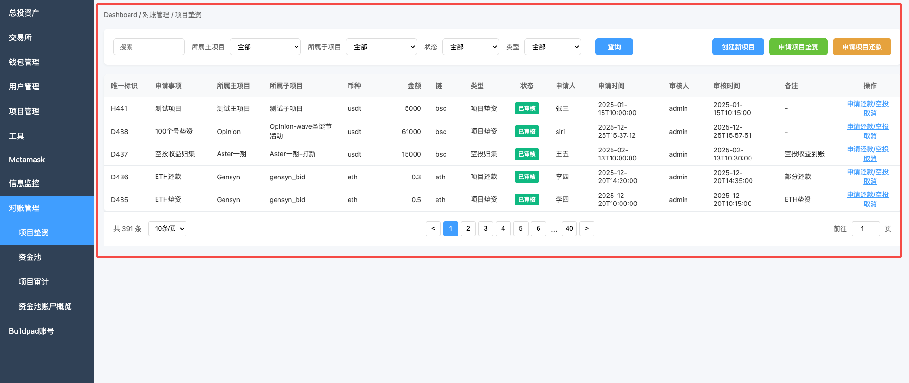
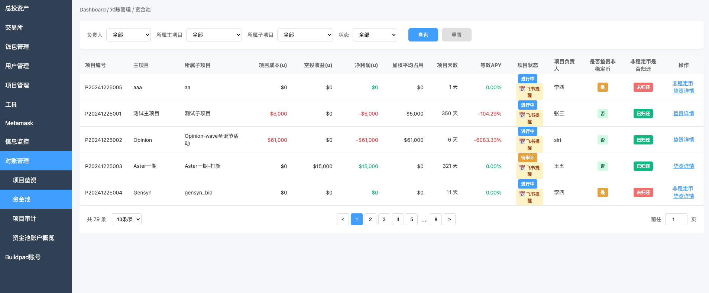

资金池管理系统操作指导手册
1. 系统概述
1.1 系统简介
资金池管理系统用于管理项目垫资、还款、空投收益等相关财务数据。系统包含三个主要模块：
- 项目垫资：管理项目的垫资申请、还款申请、空投收益申请
- 资金池：查看所有项目的资金池统计信息
- 项目审计：对项目进行数据审计
1.2 核心概念
- 主项目：多个子项目的集合，空投收益以主项目为维度计算
- 子项目：具体执行的项目单元
- 项目状态：进行中、待审计、已完结、已取消
- 申请记录状态：待审核、已审核、已拒绝、已取消
- 稳定币：USDT、USDC等价格稳定的数字货币
- 非稳定币：ETH、BNB、BTC、SOL等价格波动的数字货币
- 等效APY：等效年化收益率，用于评估项目的年化投资回报率，计算公式：(主项目总净利润 × 365) ÷ sum(主项目占用权重) × 100%，其中占用权重 = 资金余额 × 持续天数。按主项目维度计算，同一主项目下所有子项目显示相同的APY值。
3. 项目垫资页面
3.1 页面位置
路径：左侧导航栏 → 对账管理 → 项目垫资
3.2 页面布局
3.2.1 操作按钮区域
页面右上角有三个主要操作按钮：
- - 创建新的主项目和子项目
- - 申请项目垫资
- - 申请项目还款或空投收益
3.2.2 创建新项目
- 主项目名称 *：例如 Opinion、Aster一期
- 子项目名称 *：例如 Opinion-wave圣诞节活动
- 项目负责人 *：从下拉列表中选择
- 备注：选填
3.2.3 申请项目垫资
- 所属主项目 *：从下拉列表中选择
- 所属子项目 *：选择主项目后会自动更新选项
- 所需链 *：BSC、ETH、Polygon等
- 所需币种 *：USDT、ETH、BNB等
- 所需金额 *：输入垫资金额
- 申请事项：填写申请事项描述
- 备注：选填
3.2.4 申请项目还款
- 项目还款：归还项目垫资
- 空投归集：申请空投收益
- 如果项目有未审核的垫资记录：提示"该项目未审核垫资"，并显示未审核记录列表。可选择"确认继续"继续操作，或选择"去核验"前往审核垫资记录。
- 如果项目未申请垫资：提示"该项目未申请垫资"。可选择"确认继续"继续操作，或选择"去申请垫资"打开垫资申请窗口（系统会自动预填主项目和子项目信息）。
3.2.5 审核申请
- 审核结果 *：通过 / 拒绝 / 取消
- 审核备注：选填
3.2.6 取消操作
在项目垫资列表的每条记录右侧"操作"列中，都有一个"取消"按钮，用于取消申请记录。
- 待审核状态：可以取消。点击"取消"后，记录状态会变更为"已取消"，审核按钮会被隐藏。系统会更新审核人和审核时间为当前用户和当前时间。
- 已审核状态：无法取消。点击"取消"后，系统会提示"操作已进行，无法取消。如需资金划转，请申请新操作。"
- 已取消状态：已经是最终状态，系统会提示"该操作已取消"。
4. 资金池页面
4.1 页面位置
路径：左侧导航栏 → 对账管理 → 资金池
4.2 页面功能
资金池页面显示所有项目的资金池统计信息，包括：
- 项目编号、主项目、子项目
- 项目成本、空投收益、净利润
- 加权平均占用（主项目维度）、项目天数（主项目维度）、等效APY（主项目维度）
- 项目状态、项目负责人
- 是否垫资非稳定币、非稳定币是否归还
4.3 查看项目详情
项目详情页面包含以下信息：
4.3.1 完整财务指标
项目详情页面显示完整的财务指标，包括：
- 项目成本：稳定币垫资 - 稳定币还款
- 空投收益：所有空投收益的总和（USD）
- 净利润：空投收益 - 项目成本（正数用绿色显示，负数用红色显示）
- 加权平均占用：主项目总加权平均占用资金（USD，按主项目维度计算）
- 项目天数：主项目总天数（从主项目下最早垫资时间开始计算）
- 等效APY：等效年化收益率（百分比，按主项目维度计算），计算公式详见第5.3节
- 项目基本信息：项目编号、主项目、子项目、负责人、状态、时间等
- 财务指标：项目成本、空投收益、净利润、加权平均占用、等效APY
- 资金统计：稳定币垫资/还款、非稳定币垫资/还款/债务
- 币种明细：每个币种的详细统计表格
- 操作流水：该项目所有申请记录的详细列表
4.4 查看非稳定币详情
模态框显示：
- 非稳定币垫资情况：格式为
ETH: 0.5（仅显示数量） - 非稳定币还款情况：格式为
ETH: 0.3 - 非稳定币债务情况：格式为
ETH: 欠款 0.2 ETH（黄色背景高亮显示）
4.5 变更项目状态
5. 项目审计页面
5.1 页面位置
路径：左侧导航栏 → 对账管理 → 项目审计

5.2 项目审计列表
项目审计页面显示所有项目的列表，包含以下详细信息：
| 列名 | 说明 |
|---|---|
| 项目编号 | 项目的唯一编号，格式：P+日期+序号 |
| 主项目 | 主项目名称 |
| 所属子项目 | 子项目名称 |
| 项目成本(u) | 项目成本（USD），计算公式：稳定币垫资 - 稳定币还款 |
| 空投收益(u) | 空投收益（USD），所有空投归集的总和 |
| 净利润(u) | 净利润（USD），计算公式：空投收益 - 项目成本。注意：等效APY按主项目维度计算，使用主项目总净利润。 |
| 项目状态 | 当前项目状态：进行中、待审计、已完结、已取消 |
| 项目负责人 | 项目负责人姓名 |
| 最新审计结果 | 最新一次审计的结果：通过、不通过、待补充、未审计 |
| 审计次数 | 该项目已进行的审计总次数 |
5.3 等效APY计算公式说明
等效APY（Equivalent Annual Percentage Yield）用于评估项目的年化收益率，采用等效日均占用资金法（单利年化），计算公式如下：
等效APY计算公式
计算步骤：
- 第一步：计算等效日均占用资金（Daily Capital Occupancy）
- 分段计算占用权重：
占用权重 = 资金余额 × 持续天数 - 等效日均占用资金：
等效日均占用资金 = sum(占用权重) ÷ 主项目总天数 - 计算方式：汇总主项目下所有子项目的垫资和还款记录，按时间排序后计算每个时间段的占用权重（资金余额 × 持续天数），然后求和
- 单位：USD
- 分段计算占用权重：
- 第二步：计算净利润（Net Profit）
- 计算公式：
主项目总净利润 = 主项目总空投收益 - 主项目总成本 - 主项目总成本 = 主项目总稳定币垫资 - 主项目总稳定币还款
- 单位：USD
- 说明：汇总主项目下所有子项目的数据计算。净利润为正数表示盈利，负数表示亏损（显示为红色）
- 计算公式：
- 第三步：计算等效年化收益率（单利版）
- 计算公式：
等效APY = (主项目总净利润 ÷ (等效日均占用资金 × 主项目总天数)) × 365 × 100% - 由于等效日均占用资金 = sum(占用权重) ÷ 主项目总天数，公式可简化为：
等效APY = (主项目总净利润 × 365) ÷ sum(占用权重) × 100% - 其中 sum(占用权重) = sum(主项目每日资金余额 × 持续天数)
- 单位：百分比（%）
- 说明：采用单利年化方式计算，不考虑复利
- 计算公式：
公式组成部分说明：
- 主项目总天数（Main Project Total Days）
- 计算方式：从主项目下最早一笔垫资申请时间到当前时间的天数
- 说明：即使子项目在不同时间开始，主项目总天数也从最早的子项目垫资时间开始计算
- 单位：天
- 365
- 一年中的天数，用于将项目收益率转换为年化收益率
等效APY计算示例：
示例：盈利项目（包含多次还款）
项目数据：
- 时间跨度：120天（从2024-01-01至2024-04-30）
- 主项目总稳定币垫资：$10,000（第0天）
- 主项目总稳定币还款：$5,000（分两次：$3,000在第45天，$2,000在第79天）
- 主项目总空投收益：$6,500（第120天）
- 主项目总成本：$10,000 - $5,000 = $5,000
- 主项目总净利润：$6,500 - $5,000 = $1,500
- 主项目总天数：120天
第一步：分段计算占用权重
| 分段 | 时间段 | 资金余额 | 持续天数 | 占用权重 |
|---|---|---|---|---|
| 分段1 | 0-45天 | $10,000 | 45天 | $450,000 |
| 分段2 | 45-79天 | $7,000 | 34天 | $238,000 |
| 分段3 | 79-120天 | $5,000 | 41天 | $205,000 |
| sum(占用权重) | $893,000 | |||
第二步：计算等效日均占用资金
等效日均占用资金 = sum(占用权重) ÷ 总天数
等效日均占用资金 = $893,000 ÷ 120天 = $7,441.67
第三步：计算等效APY
等效APY = (主项目总净利润 × 365) ÷ sum(占用权重) × 100%
等效APY = ($1,500 × 365) ÷ $893,000 × 100%
等效APY = $547,500 ÷ $893,000 × 100%
等效APY = 61.31%
结果：等效APY = 61.31%（绿色显示，表示盈利）
示例2：亏损项目（主项目下单一子项目）
- 主项目总稳定币垫资：$10,000
- 主项目总稳定币还款：$8,000
- 主项目总成本：$10,000 - $8,000 = $2,000
- 主项目总空投收益：$1,000
- 主项目总净利润：$1,000 - $2,000 = -$1,000
- sum(主项目占用权重) = $10,000 × 90 = $900,000（简化计算：假设资金余额在整个期间保持不变）
- 主项目总天数：90天
计算过程：
等效APY = (主项目总净利润 × 365) ÷ sum(占用权重) × 100%
等效APY = (-$1,000 × 365) ÷ $900,000 × 100%
= -$365,000 ÷ $900,000 × 100%
= -40.56%
结果：等效APY = -40.56%（红色显示，表示亏损）
- 按主项目维度计算：等效APY是按主项目汇总计算的，同一主项目下的所有子项目显示相同的APY值
- 当sum(占用权重)为0或主项目总天数为0时，等效APY显示为0%
- 等效APY为正数时显示为绿色，负数时显示为红色
- 等效APY用于评估项目的年化收益率，采用单利年化方式计算，不考虑复利
- 空投收益以主项目为维度发放，因此等效APY也按主项目维度计算，更符合业务逻辑
5.4 进行项目审计
模态框会自动显示：
- 项目申请记录表格：该主项目下所有子项目的申请记录
- 资金统计表格（按币种）：每个币种的垫资、还款、空投收益统计
- 项目垫资实际到账 *：已全部到账 / 部分到账 / 未到账
- 项目还款实际到账 *：已全部到账 / 部分到账 / 未到账
- 空投收益实际到账 *：已全部到账 / 部分到账 / 未到账
- 所属交易所余额 *：已清空 / 未清空 / 不适用
- 链上钱包余额 *：已清空 / 未清空 / 不适用
- 审计结果 *：通过 / 不通过 / 待补充材料
- 审计备注：选填，详细说明
模态框会自动显示：
- 项目申请记录表格：该主项目下所有子项目的申请记录
- 资金统计表格（按币种）：每个币种的垫资、还款、空投收益统计
这些数据可以帮助审计人员全面了解项目的资金流动情况，包括：
- 所有申请记录的类型、币种、金额、状态
- 每个币种的垫资金额、还款金额、空投收益
- 各币种的差额（垫资 - 还款）
5.5 查看项目详细数据
在项目审计列表中，每个项目都显示完整的财务数据，包括：
| 数据项 | 说明 |
|---|---|
| 项目成本(u) | 稳定币垫资减去稳定币还款的金额（USD），如果为正数显示为红色 |
| 空投收益(u) | 所有空投归集记录的总和（USD） |
| 净利润(u) | 空投收益减去项目成本（USD），正数显示为绿色，负数显示为红色 |
| 项目状态 | 当前项目的状态标识（进行中、待审计、已完结、已取消） |
| 项目负责人 | 项目负责人姓名 |
| 最新审计结果 | 最新一次审计的结果（通过、不通过、待补充、未审计） |
| 审计次数 | 该项目已进行的审计总次数 |
| 等效APY | 等效年化收益率（按主项目维度计算），需要在项目详情页面查看（点击"详情"按钮） |
| 加权平均占用 | 主项目总加权平均占用资金（按主项目维度计算），需要在项目详情页面查看（点击"详情"按钮） |
| 项目天数 | 主项目总天数（从主项目下最早垫资时间开始计算），需要在项目详情页面查看（点击"详情"按钮） |
- 在进行审计前，可以先在列表中查看项目的净利润和项目成本，快速了解项目盈亏情况
- 如果净利润为负数（显示为红色），说明项目处于亏损状态，审计时需要特别关注
- 查看等效APY：点击"详情"按钮可以查看项目的完整财务指标，包括等效APY、加权平均占用、项目天数等详细数据
- 等效APY用于评估项目的年化收益率，计算公式请参考上面的第5.3节说明
6. 常用操作流程
6.1 创建新项目并申请垫资
- 进入"项目垫资"页面
- 点击"创建新项目"按钮，填写主项目名称、子项目名称、项目负责人
- 点击"申请项目垫资"按钮，选择项目，填写币种、金额、链等信息
- 提交申请后，等待审核
- 审核通过后，可以在"资金池"页面查看项目统计信息
6.2 项目还款和空投收益
- 进入"项目垫资"页面
- 点击"申请项目还款"按钮
- 选择类型为"项目还款"，填写还款信息，提交申请
- 等待审核通过
- 如果项目获得空投收益，点击"申请项目还款"按钮，选择类型为"空投归集"
- 注意：申请空投收益前，必须确保所有非稳定币债务已还清
- 提交空投收益申请，等待审核
6.3 非稳定币垫资和还款
- 申请非稳定币垫资（如ETH、BNB）
- 系统会显示非稳定币垫资提醒
- 后续还款时，必须选择相同的币种，输入相同或更多的数量
- 如果还款数量不足，可以进行多次还款，直到还清
- 在"资金池"页面可以点击"非稳定币"按钮查看详细的垫资、还款、债务情况
6.4 项目审计和状态变更
- 进入"项目审计"页面
- 点击项目的"审计"按钮
- 查看项目申请记录和资金统计
- 核实实际到账情况，检查交易所和钱包余额
- 填写所有必填字段，选择审计结果，提交审计
- 如果审计通过，系统会提示是否修改状态为"已完结"
- 或者手动点击"变更状态"按钮，将状态修改为"已完结"
7. 注意事项
7.1 通用注意事项
- 系统数据在各页面之间自动同步
- 标记有 * 号的字段为必填项
- 只有状态为"待审核"的记录才能进行审核操作
- 未审计的项目不能将状态修改为"已完结"
7.2 项目垫资注意事项
- 稳定币（USDT、USDC）垫资可以用任何稳定币还款
- 非稳定币（ETH、BNB等）垫资必须用相同币种还款
- 非稳定币垫资会影响后续空投收益申请
7.3 非稳定币注意事项
- 非稳定币垫资必须用相同币种归还
- 可以进行多次还款，直到还清
- 如果项目有未归还的非稳定币债务，不能申请空投收益
7.4 项目审计注意事项
- 项目还款和空投收益都发放后，项目状态应变为"待审计"
- 审计时需要核实实际到账情况，检查交易所和钱包余额
- 只有审计通过的项目才能将状态修改为"已完结"
8. 常见问题解答
Q1: 如何创建新项目？
A: 进入"项目垫资"页面，点击右上角的"创建新项目"按钮，填写主项目名称、子项目名称、项目负责人，点击"确认创建"即可。
Q2: 申请垫资时，如何选择主项目和子项目？
A: 先选择主项目，下拉列表会显示所有已创建的主项目。选择主项目后，子项目下拉列表会自动更新，只显示该主项目下的子项目。
Q3: 非稳定币垫资后，如何还款？
A: 点击"申请项目还款"按钮，选择类型为"项目还款"，选择相同的主项目和子项目，选择相同的币种（如垫资是ETH，还款也要选ETH），输入还款数量（可以等于或大于垫资数量）。如果还款数量不足，可以先还一部分，然后再申请一次还款。
Q4: 为什么不能申请空投收益？
A: 如果系统提示"无法申请空投收益"，可能是因为该项目有未归还的非稳定币债务。必须先还清所有非稳定币债务，才能申请空投收益。请查看资金池页面的"非稳定币"按钮，查看具体的债务明细。
Q5: 如何查看项目的详细财务信息？
A: 进入"资金池"页面，找到要查看的项目，点击"垫资详情"按钮，可以看到项目的资金统计、币种明细、财务指标、操作流水等信息。
Q6: 项目审计时需要查看哪些信息？
A: 点击"审计"按钮后，模态框会自动显示该主项目下所有子项目的申请记录表格，以及按币种统计的垫资、还款、空投收益明细。您需要根据这些信息，核实实际到账情况，检查交易所和钱包余额。
Q7: 为什么不能将项目状态修改为"已完结"？
A: 系统要求项目必须先完成审计，才能将状态修改为"已完结"。请进入"项目审计"页面，点击"审计"按钮，完成项目审计。审计通过后，才能将状态修改为"已完结"。
Q8: 审核操作可以撤销吗？
A: 审核操作一旦提交，无法撤销。请谨慎操作，确认审核结果后再提交。
技术支持
如遇到问题，请联系系统管理员或技术支持团队。
文档版本: v1.0
最后更新: 2024年12月
适用系统: 资金池管理系统